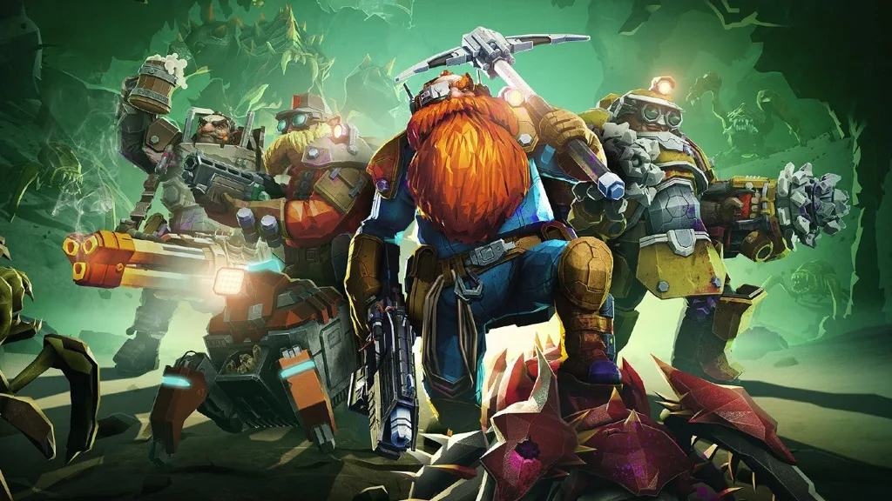

Oque é:
Deep Rock Galatic é um jogo roguelite em primeira pessoa em que você um anão deve explorar as cavernas do planeta chamado Hoxxes IV, onde deve coletar minérios e recursos para a empresa que trabalha.
Além das dificuldades de ser um minerador, você deve lidar com os principais habitantes das cavernas e seus principais inimigos, tipos de aracnídeos Glyphids, aracnídeos que irão te empedir de explorar a caverna se não tiver os equipamentos necessários!
Lista de mineradores
- Batedor
- Atirador
- Engenheiro
- Escavador
Tela inicial do Deep Rock Galatic

Minérios mais minerados nas cavernas
| ANOS | 2024 | 2025 | 2026 |
|---|---|---|---|
| NITRA | 30% | 50% | 20% |
| OURO | 40% | 10% | 50% |
| MORKITA | 10% | 60% | 30% |